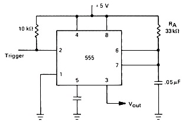

Q.1 An astable 555 timer has the following number of stable states?
A) 0
B) 1
C) 2
D) 3
Ans : A
Q.2 What is the difference between an astable multivibrator and a monostable multivibrator?
A) The astable is free running.
B) The astable needs to be clocked.
C) The monostable is free running.
D) None of these
Ans : A
Q.3 The output of the astable circuit _____?
A) constantly switches between two states
B) is LOW until a trigger is received
C) is HIGH until a trigger is received
D) floats until triggered
Ans : A
Q.4 Is the circuit in Figure an astable multivibrator or a monostable multivibrator?

A) monostable
B) astable
Ans : B
Q.5 An astable multivibrator requires _____?
A) balanced time constants
B) a pair of matched transistors
C) no input signal
D) dual J-K flip-flops
Ans : C
Sources